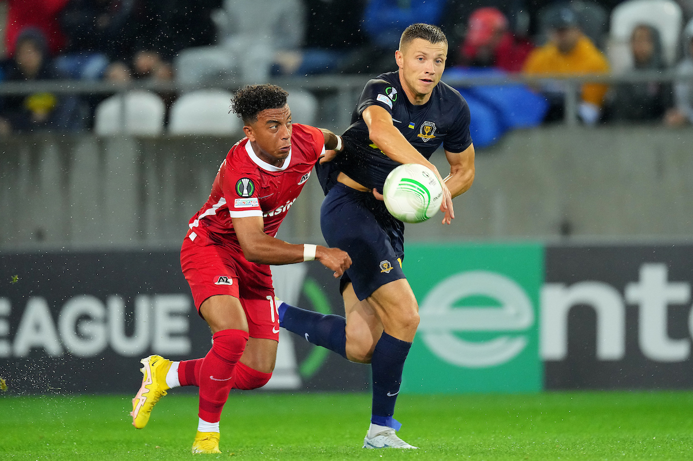

Невдача на старті. Дніпро-1 не втримав нічию проти АЗ Алкмар

Дніпровський «Дніпро-1» міг виступати і в турнірі, який котирується вище, але через виліт в останньому раунді кваліфікації від кіпрського АЕКа був змушений задовольнитися участю в груповому етапі Ліги конференцій. В стартовому турі підопічним Кучера протистояв нідерландський «АЗ Алкмар».
На гру, яка проходила в словацькому місті Кошице, головний тренер «дніпрян» виставив досить цікавий склад. Впадали в очі позиція Сарапія (той грав в центрі не поля, а захисту), присутність на полі молодого Рубчинського та відсутність навіть в заявці Бланко. Решта позиці запитань не викликали.
Очікувалося, що «Дніпро-1» не форсуватиме події, а віддасть ініціативу супернику, сподіваючись на контратаки. І очікування справдилися - розпочалася гра від своїх воріт в надії на помилку нідерландців. Вже традиційно в єврокубках міг привезти собі проблеми Валеф, але Адамюк підстрахував свого голкіпера в дебюті гри після помилки біля своїх воріт.
Дещо неочікувано виник гольовий момент біля воріт «АЗ Алкмаар». Після прострілу Довбика на Гуцуляка в епізод вирішив втрутитися захисник. Якби він вдарив на кілька сантиметрів точніше, був би рахунок відкритий, а так - штанга врятувала гостей.
Цей момент - скоріше, виняток зі правил. Більше нічого подібного не вдалося створити в першому таймі жодній команді - з прострілами та навісами справлялися захисники. Тому на перерву команди пішли за закономірної, мабуть, нульової нічиєї. Залишалося сподіватися, що тайм другий стане видовищнішим.
Стартові хвилини другої половини стали логічним продовженням першого тайму. Гості атакували, українці відбивалися, але нічого критичного на полі не відбувалося. Вдалося навіть пробити - на 54 хвилині Гуцуляк відгукнувся на довге закидання зліва і головою бив метрів з 10 - в руки голкіперу. Але низка активність мала об'єктивну причину - сильний дощ значно ускладнював гру в атаці обом командам.
Могли б «спортклубівці» і пропустити. І знов були питання до воротаря - Одгор справа, мабуть, все ж не невдало навішував, а цілеспрямовано бив з гострого кута, побачивши, що кіпер далеко вийшов з воріт. Пощастило, що Валеф кінчиками пальців перевів м'яч у перекладину.
Проте відстрочити взяття своїх воріт вдалося буквально на декілька секунд. Після прострілу з правого флангу від Сугавари ніхто із захисників не перешкодив Дані де Віту розстрілювати Валефа з кількох метрів. Питання до бразильського воротаря в цьому епізоді були б недоречними - він нічого не міг зробити. 0:1.
Рятувати ситуацію Кучер випустив Назаренка, який змінив пасивного сьогодні Амаша, і Балулі, який дебютував за «Дніпро-1». Проте ледь не пропустили ще - після кутового захисники просто спостерігали, як м'яч летить мимо дальньої штанги після удару з лінії воротарського від гравця «АЗ Алкмар».

Ні ці заміни, ні інші навіть близько не допомогли зрівняти рахунок. Більше того, могли пропускати ще, але Валеф врятував, відбивши поспіль два удари в одній атаці.
0:1 - мабуть, заслужений рахунок. Гра вийшла відверто бідною на моменти. Якщо в УПЛ СК «Дніпро-1» виглядає досить непогано, то в єврокубках ситуація, м'яко кажучи, діаметрально протилежна.
В паралельному матчі «Вадуц» та «Аполлон» зіграли в нульову нічию. Саме з останніми «Дніпро-1» через тиждень проведе матч 2 туру.
| # | Команда | P | W | D | L | Goals | PTS |
|---|---|---|---|---|---|---|---|
| 1 | АЗ Алкмаар | 1 | 1 | 0 | 0 | 1:0 | 3 |
| 2 | Аполлон Лімасос | 1 | 0 | 1 | 0 | 0:0 | 1 |
| 3 | ФК Вадуц | 0 | 1 | 0 | 1 | 0:0 | 1 |
| 3 | Дніпро-1 | 1 | 0 | 0 | 1 | 0:1 | 0 |
Ліги конференцій УЄФА. Груповий етап. Група E. 1-й тур.
«Дніпро-1» – АЗ Алкмар - 0:1
Д. де Віт, 63
 Базур, 90+2
Базур, 90+2
«Дніпро-1»: Макс Валеф – Бузанелло, Сарапій, Сваток (Танчик, 76), Адамюк – Рубчинський (Когут, 77), Бабенко (Громов, 84), Піхальонок (Балулі, 69) – Амаш (Назаренко, 69), Довбик, Гуцуляк.
АЗ Алкмар: Верхюлст – Керкез (М. де Віт, 62), Деккер, Беукема, Хацидіакос (Сугавара, 62) – Рейндерс, Д. де Віт, Класі – ван Бредероде (Базур, 88), Одгор (Лахдо, 62), Ев’єн.
Арбітр: Їгаль Фрід (Ізраїль).
Стадіон: «Кошицька футбольна арена» (Кошице, Словаччина).
Удари (у площину): 4 (2) – 7 (3)
Кутові: 3 – 3
Офсайди: 3 – 2.